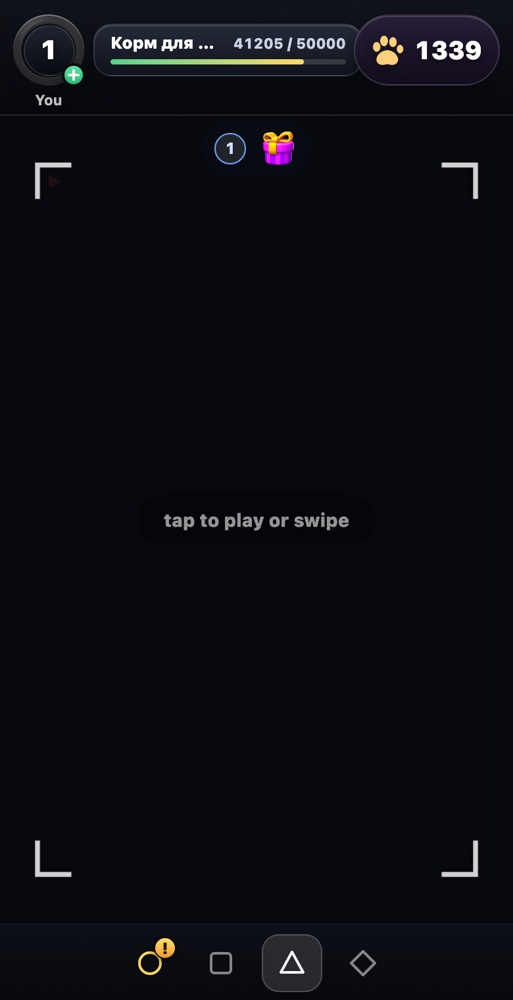
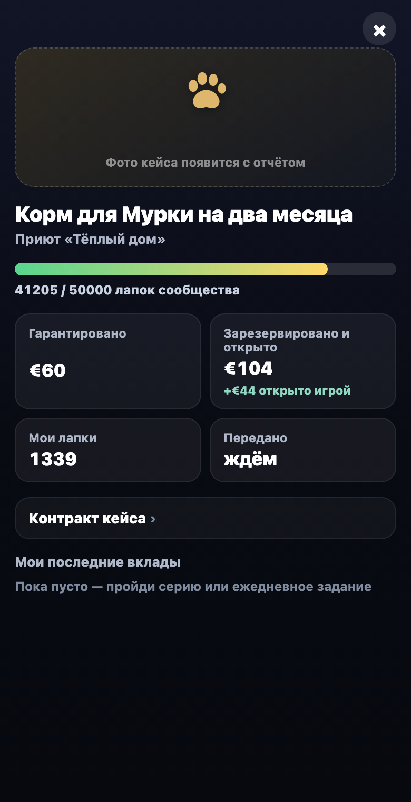
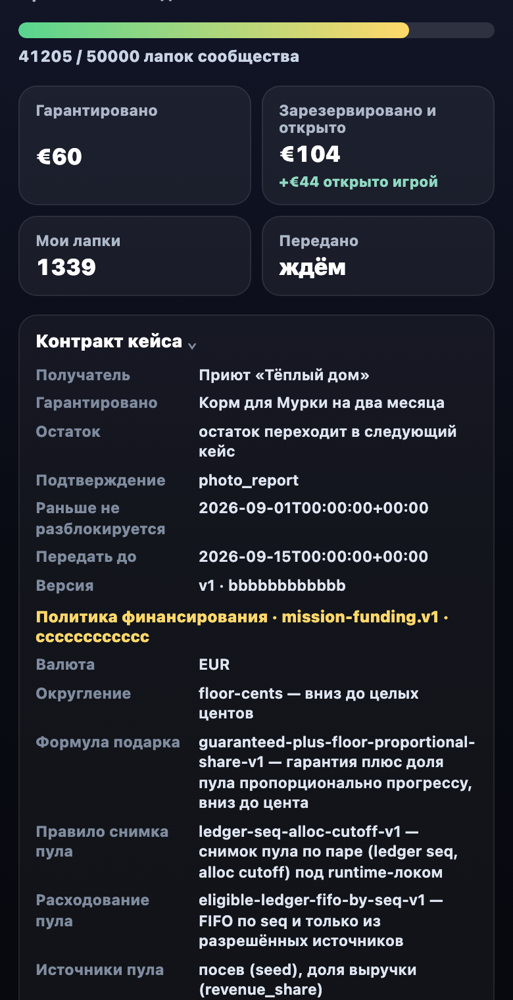
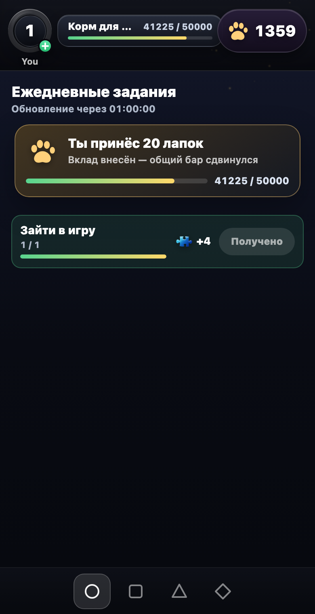
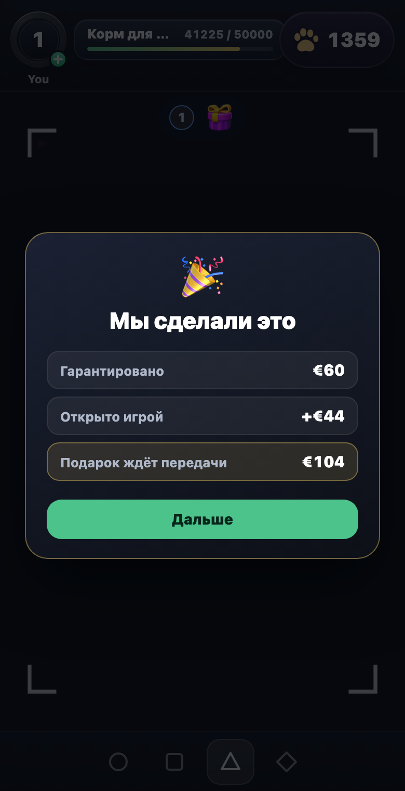
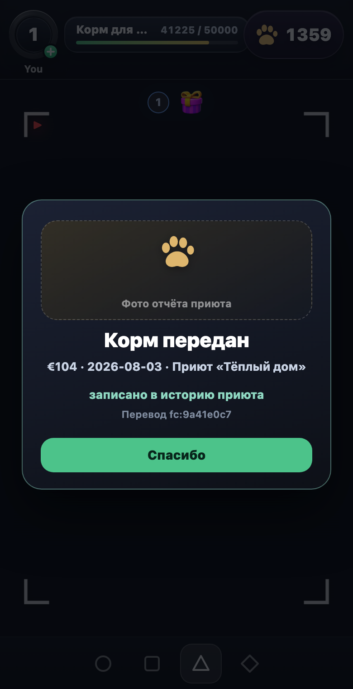
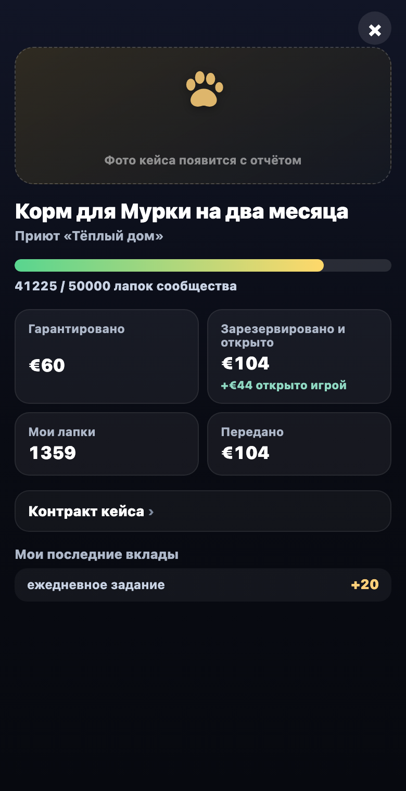

Play for Good · показ 13.08 · шаг 1
Что уже есть: макеты, карта, живые mission-экраны
Три двери ниже — то, что уже сделано и ни разу не показывалось
целиком. Скрины миссии — не рисунки: это production-билд ленты из master со
включённым mission-флагом и стабом бэкенда (числа — «Сезон Мурки» из макетов).
Mission-slice в master — как он выглядит уже сейчас
Выключен двойным гейтом (build-флаг + capability), поэтому в
живой ленте его не видно. Ниже — реальные экраны.

1 · HUD ленты. Бар кейса «Корм для Мурки» + лапки вместо бейджа паззлов.
2 · Экран кейса. Метр сообщества и четыре обязательных числа.
3 · Контракт в один тап. Все поля закрытой funding-policy, точными wire-значениями.
4 · Церемония вклада. «Ты принёс 20 лапок» — только после server receipt.
5 · UNLOCKED. «Мы сделали это»: гарантировано / открыто игрой / подарок ждёт передачи.
6 · FULFILLED. «Корм передан»: сумма · дата · приют, номер перевода.
7 · История. Экран кейса после вклада: строка истории из receipt.